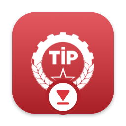
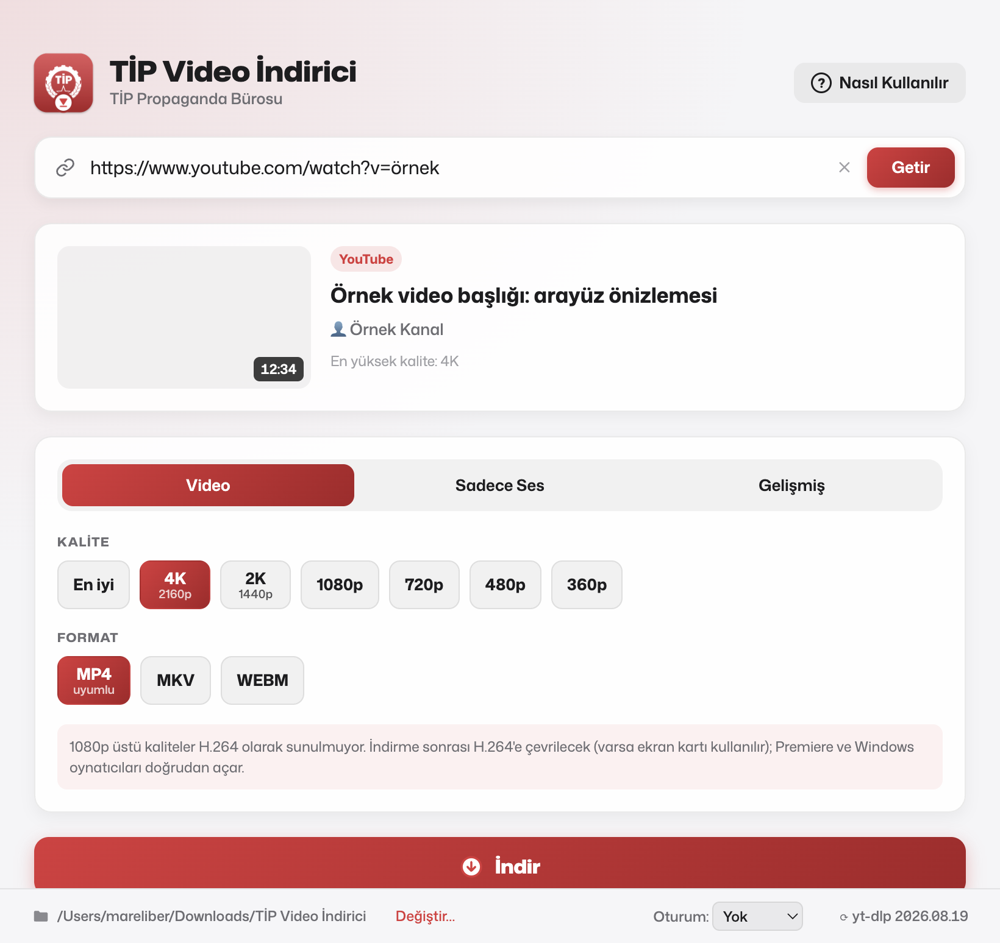

YouTube, X (Twitter), Instagram ve 1000'den fazla siteden videoları ve sesleri tek tıkla indirin. Mac ve Windows için ücretsiz.

Teknik bilgi gerektirmez. Bağlantıyı kopyalayıp uygulamaya dönmeniz yeterli; gerisini uygulama halleder.
YouTube, X veya Instagram bağlantısını kopyalayıp uygulamaya döndüğünüzde otomatik algılanır.
Kaliteyi siz seçersiniz. Videolar QuickTime, Premiere ve Final Cut'ın doğrudan açabileceği biçimde kaydedilir. Aynı anda birden fazla video indirebilirsiniz.
Konuşmaları, müzikleri MP3, M4A, WAV veya FLAC olarak indirin.
Uzun bir videonun tamamı yerine sadece ihtiyacınız olan bölümü alın: önizlemede başlangıcı ve bitişi seçin ya da 1:23 gibi yazın.
Giriş gerektiren Instagram gönderileri için tarayıcınızdaki oturum kullanılır; uygulamaya şifre girmezsiniz.
Siteler değiştiğinde indirme motoru uygulamanın içinden güncellenir; yeniden kurmanız gerekmez.
Birkaç dakika sürer. İlk açılışta bir güvenlik uyarısı görmeniz normaldir.
İndirdiğiniz DMG dosyasını açın, uygulama simgesini Applications klasörüne sürükleyin.
Uygulamayı açın. “Apple doğrulayamadı” uyarısında Bitti'ye basın — Çöp Sepetine Taşı'ya değil.
Sistem Ayarları › Gizlilik ve Güvenlik'te en alta inip Yine de Aç'a basın ve Mac şifrenizi girin. Hepsi bu.
İndirdiğiniz TIP-Video-Indirici-Setup.exe dosyasına çift tıklayın.
“Windows bilgisayarınızı korudu” uyarısı çıkarsa Ek bilgi'ye, ardından Yine de çalıştır'a basın.
Kurulum yönetici şifresi istemeden biter; uygulama açılır, masaüstüne kısayol eklenir.
Bu uyarılar, uygulama henüz ücretli bir Apple / Microsoft geliştirici sertifikasıyla imzalanmadığı için çıkar. İzni bir kez verirsiniz; uygulamanın kaynak kodu bu sayfanın bağlı olduğu GitHub deposunda herkese açıktır.
Hayır. Uygulama tamamen ücretsizdir, reklam ve hesap açma yoktur.
Ekranın sol üstündeki elma menüsünden Bu Mac Hakkında'yı açın. “Çip: Apple M1/M2/M3/M4…” yazıyorsa Apple Silicon, “İşlemci: Intel” yazıyorsa Intel dosyasını indirin. En az macOS 13 (Ventura) gerekir.
YouTube, X (Twitter) ve Instagram bağlantıları otomatik algılanır. TikTok, Facebook, Vimeo, Reddit, Twitch, SoundCloud ve 1000'den fazla siteyi de bağlantıyı yapıştırarak kullanabilirsiniz. Tam liste
Tarayıcınızda Instagram'a giriş yapın, ardından uygulamanın alt çubuğundaki Oturum menüsünden o tarayıcıyı seçip tekrar deneyin. Windows'ta Firefox en sorunsuz seçenektir.
Siteler sık değişir. Uygulamanın alt çubuğunun sağındaki yt-dlp sürüm numarasına tıklayarak indirme motorunu güncelleyin; genellikle bu yeterlidir.
Evet. Bağlantıyı getirdikten sonra seçeneklerin altındaki Sadece bir kısmını indir anahtarını açın. Önizlemede zaman çizelgesindeki tutamaçları sürükleyerek ya da başlangıç ve bitişi 1:23 gibi yazarak aralığı seçin, Seçimi oynat ile kontrol edip İndir'e basın. Yalnızca o bölüm indirilir; kesim tam seçtiğiniz saniyeden yapılır.
Hayır, uygulama Mac ve Windows bilgisayarlar içindir.